| EG: Lab Shift Plots | EG Lab Parameter Shift Plots | EG Liver Test Safety Panel |
| 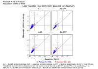 | 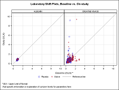 | 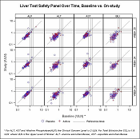 |
| larger version | larger version | larger version |
| Click here for Lab Shift Plots Data | Click here for Lab Parameter Shift Plots Data | Click here for Liver Test Safety Panel Data |
| Comment on Lab Shift Plots | Comment on Lab Parameter Shift Plots | Comment on Liver Test Safety Panel |
| EG Mean of ALT | EG Cumulative Incidence | EG Distribution of ALT |
| 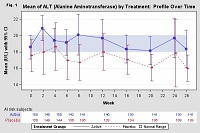 | 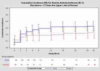 | 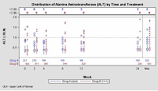 |
| click for larger graphic | click for larger graphic | click for larger graphic |
| Click here for Mean of ALT Data | Click here for Cumulative Incidence Data | Click here for Distribution of ALT by Time and Treatment Data |
| Comment on Mean of ALT | Comment on Cumulative Incidence | Comment on Distribution of ALT |
| EG Liver Test Safety Panel | ||
| Click here for Liver Test Safety Panel Data | ||
| Comment on Liver Test Safety Panel | ||
| EG Distribution of ALT | ||
| 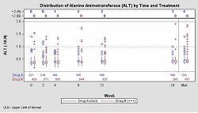 | ||
| Click here for Distribution of ALT Data | ||
| Comment on Distribution of ALT |
| EG Time Course of Lab Test Values | EG Liver Function Tests by Trial Day | |
| 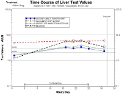 | 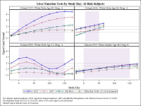 | |
| Click here for Time Course of Lab Test Values Data | Click here for Liver Function Tests by Trial Day Data | |
| Comment on Time Course of Lab Test Values | Comment on Liver Function Tests | |
| EG: Lab Shift Plots | ||
| Click here for Lab Shift Plots Data | ||
| Comment on Lab Shift Plots |
| EG Scatter Plot Max Transaminase | EG Liver Function Tests by Trial Day | |
| 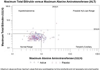 | ||
| Click here for Max Transaminase Data | Click here for Liver Function Tests by Trial Day Data | |
| Comment Scatter Plot on Max Transminase | Comment on Liver Function Tests | |
| EG Frequency Plot | ||
| 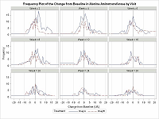 | ||
| Larger version | ||
| Click here for Frequency Plot Data | ||
| Comment on Frequency Plot | ||
{kind=link}
{kind=link}
{kind=link}
{kind=link}
{kind=link}
{kind=link}
{kind=link}